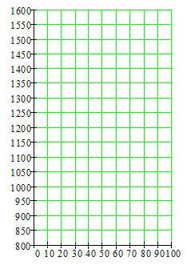

This Lesson reviews linear systems in two variables. We solve systems graphically — algebraic solutions are treated in the next Lesson. Part of the purpose of this Lesson is to practice the graphing techniques presented in Chapter 1, both on paper and using technology.
Students should learn to recognize inconsistent and dependent systems by writing both equations in the same form, either general linear or slope-intercept. For example, point out that two lines with the same slope but different \(y\)-intercepts must be parallel.
The application to supply and demand may be new to students. It is also a good idea to review the formula Profit = Revenue - Cost, and to remind students that profit can be positive or negative, and that breaking even means to make zero profit.
Activity2.2.1.Solving a System by Graphing.
Delbert and Francine are buying appliances for their new home. They have a choice of two different refrigerators: a standard model that sells for $1000 and an energy-efficient model at a price of $1200. The standard model costs $6 per month to run, and the energy-efficient model costs $2 per month.
Write an equation for \(S\text{,}\) the total cost of purchasing and running the standard model for \(t\) months.
Write an equation for \(E\text{,}\) the total cost of purchasing and running the energy-efficient model for \(t\) months.
Complete the table of values and graph both equations on the grid.
\(t\)
20
40
60
\(S\)
\(\hphantom{00000}\)
\(\hphantom{00000}\)
\(\hphantom{00000}\)
\(E\)

Read your graph: What is the intersection point of the two graphs? What do the coordinates of the point tell us?
Use algebra to find the answer to part (c).
Activity2.2.2.Using a Graphing Utility.
Francine wants to combine oats and wheat to make a cereal with 10 grams of protein per cup. Oat flakes provide 11 grams of protein per cup. Wheat flakes provide 8.5 grams of protein per cup. How many cups of each grain will she need for a box of cereal containing 3 cups?
Describe the two unknown quantities:
\(\hphantom{00000} x:\)
\(\hphantom{00000} y:\)
Complete the table.
Cups
Grams of protein per cup
Grams of protein
Oats
\(\hphantom{0000000000}\)
\(\hphantom{00000}\)
\(\hphantom{00000}\)
Wheat
Mixture
Write two equations, one about the amount of each grain in the mixture, and one about the amount of protein in the mixture.
Solve each equation for \(y\text{,}\) and graph them using technology. (Hint: What are the largest and smallest possible values for \(x\) and \(y\text{?}\) Use these values to choose a window.)
Use technology to find the intersection point. What do the coordinates of the intersection point tell us?
Activity2.2.3.How Many Solutions?
Graph each system on the grid.
System I
\begin{gather*}
3x - 2y = 9\\
x = \frac{2}{3} y + 3
\end{gather*}
\(\hphantom{00000}\)System I: \(\hphantom{00000000000000000000000000}\) System II:
Write each equation in slope-intercept form. What do you notice?
\(\hphantom{00000}\)System I: \(\hphantom{00000000000000000000000000}\) System II:
Without graphing its equations, how can you tell how many solutions a system has?
There are three possible forms for a system of two linear equations in two variables. List the names of these three forms, and how many solutions each form has.
Is it possible for a system of two linear equations in two variables to have exactly two solutions? Why or why not?
Subsection2.2.1Check Your Understanding
In Activity 1, how did you use a graph to solve the system?
How did you solve the system in Activity 1 algebraically?
In Activity 2, each equation corresponds to one of the columns of the table. Which column goes with each equation?
Delbert says that the solution of the system \(~y=2x,~y=12-x~\) is \(~x=4~\text{.}\) What is wrong with his answer?
Subsection2.2.2Wrap-Up
In this Lesson, we worked on the following skills and goals related to linear models:
Verify a solution of a system.
Solve a linear system graphically.
Identify inconsistent and dependent systems.
Model applications in two variables.
Subsection2.2.3Questions for Writing or Discussion
What do the points on the graph of an equation represent?
What is true about the lines in an inconsistent system?
Is it possible for a linear system to have more than one solution?
What is the input variable in a demand equation?
Concept Questions.
Which points on the graphs satisfy both equations in a system?
Their \(x\)-intercepts
Their \(y\)-intercepts
Their intersection points
None of the points
How can you verify that a given point is the solution of a system?